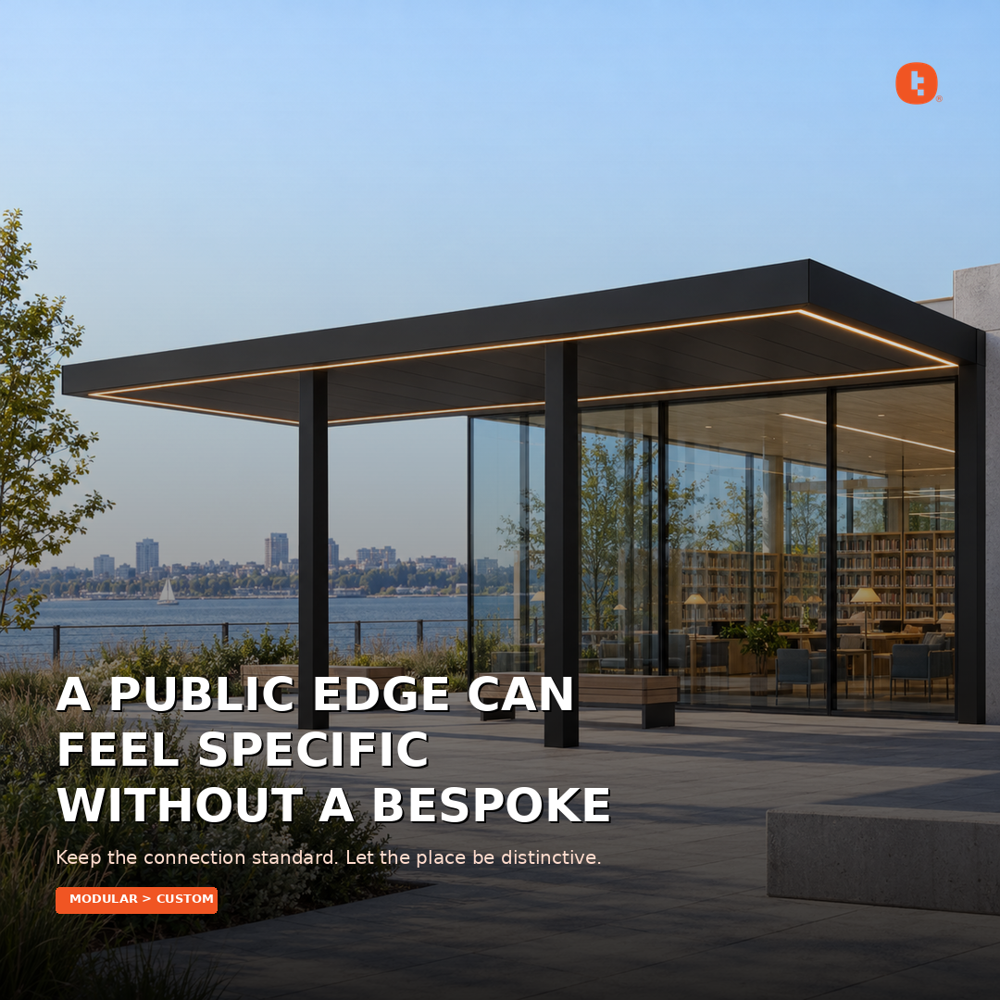

Instagram 1
Insight: A public edge can feel specific without a bespoke frame. Explanation: A repeatable bay gives the plaza a measured roofline while stone, planting and the building carry the local identity. Shift: Keep the connection standard. Let the place be distinctive. Tudelü is a click-together modular aluminum system: no welding, concealed connections, continuous mitered fascia and integrated LED. Four matte powder-coat colors. $60/sqft.